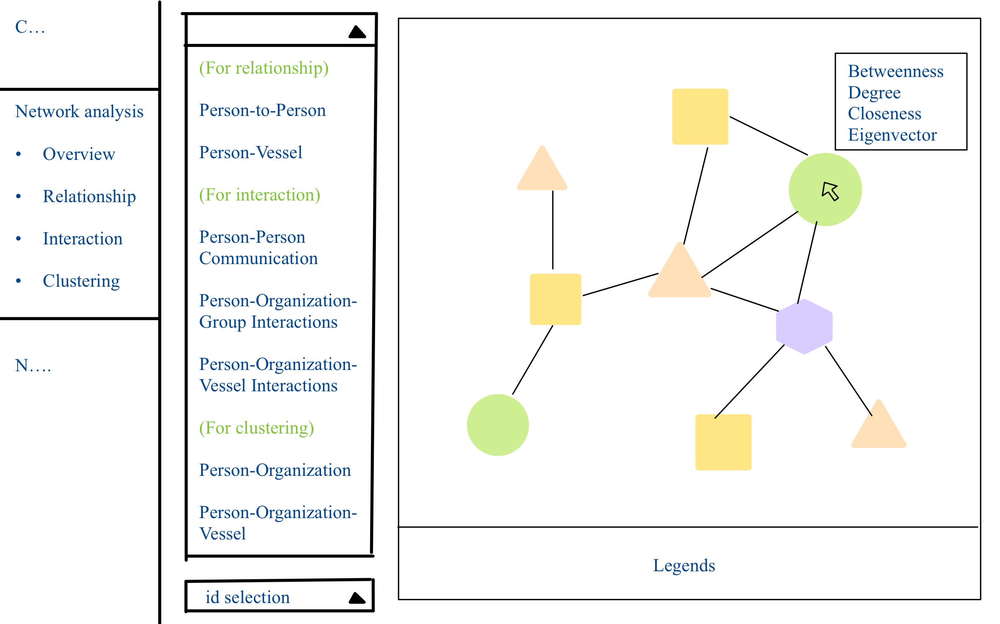

shinyUI(
fluidPage(
titlePanel("Take-Home Exercise 3 — Full Dashboard"),
sidebarLayout(
sidebarPanel(
airDatepickerInput("dateRange", "Select Date Range:", range = TRUE,
value = c(as.Date("2040-10-05"), as.Date("2040-10-14")),
minDate = as.Date("2040-10-01"), maxDate = as.Date("2040-10-31")),
pickerInput("eventType", "Select Event Types:",
choices = c("AccessPermission", "Bribery", "Payment", "Communication", "Coordination"),
multiple = TRUE,
selected = c("AccessPermission", "Bribery", "Payment", "Communication", "Coordination"),
options = list(`actions-box` = TRUE, `live-search` = TRUE)),
downloadButton("download_filtered", "Download Filtered Timeline Data")
),
mainPanel(
tabsetPanel(
tabPanel("Communication Pattern", plotlyOutput("commPlot")),
tabPanel("Network Analysis", visNetworkOutput("networkPlot")),
tabPanel("Nadia Conti's Illegal Activities",
visNetworkOutput("illegalNetworkPlot"),
plotlyOutput("betweennessPlot"),
plotlyOutput("timelinePlot")
)
)
)
)
)
)Take Home Exercise 3
Mini-Challenge 3
1 Overview
In this exercise, a comprehensive interactive Shiny dashboard is designed to support the investigative work of journalist Clepper Jessen in the Oceanus community. The dashboard consists of three interactive panels: (1) Communication patterns over time, revealing daily message spikes and frequent contacts; (2) Network analysis, identifying tightly linked groups and key influencers using centrality metrics; and (3) A focused view on Nadia Conti, visualizing her ego-network, illegal ties, and a timeline of confirmed and suspicious events. The interactive system, built with R Shiny, ggplotly, and visNetwork, enables dynamic exploration of relationships and behaviors based on intercepted communications and knowledge graph data.
2 Storyboard
2.1 Communication patterns
This interface is designed to reveal temporal communication patterns and how they change over two weeks. The user can adjust time granularity (hourly, daily, weekly) and filter the date range to spot recurring daily peaks in message traffic. Interactive controls allow focusing on a specific person or entity, highlighting that entity’s communications to determine who frequently contacts or influences them. This addresses Clepper’s goal of identifying regular daily communication times and shifts in these patterns, and seeing influence relationships for a chosen entity.
| Component | description | Shiny & R packages |
| Time Granularity Filter | A dropdown to aggregate messages by hour-of-day or by day/week. This lets the user switch the resolution of the trend analysis. | selectInput shinyWidgets::pickerInput |
| Date Range Slider | An interactive date slider to select the two-week observation window or a specific subrange. | sliderInput |
| Entity Selector | A dropdown search input to select a specific entity (person or vessel) of interest. When an entity is chosen, the plots highlight or filter to communications involving that entity. | selectInput shinyWidgets::pickerInput |
| Message Trend | A line chart showing the count of messages over time. X-axis as date/time, y-axis as message count. This reveals daily spikes and how they shift over the two weeks. The chart updates based on the chosen granularity. | ggplotly |
| Daily Pattern Heatmap | A heatmap visualizing message frequency by hour-of-day (columns) vs date (rows). Each cell’s color intensity reflects the number of communications at that hour on that day, making it easy to spot recurring daily time slots with heavy activity | geom_tile() heatmaply |
| Message Distribution | When the user selects a specific day, a sub-chart displays the distribution of that day’s communications. This could be a bar plot of messages by hour for that day. If focusing on a specific entity, the chart might show inbound vs outbound messages for that person on that day. | ggplot2 ggplotly |
| Interpretation Panel | A short text box aligned in the sidebar providing guidance on how to read the charts, and legends. | helpText() wellPanel() |
2.2 Network analysis

This interface enables Clepper to explore how people and vessels are interconnected in the knowledge graph, and to discover groupings of entities that frequently interact. The user can toggle between different network views to examine specific interaction types. They can also identify cohesive clusters (communities) in the network and discern which thematic “group” each cluster might represent. The interface also supports selecting an individual node to highlight its connections, helping reveal sub-networks or tightly knit groups, and ultimately addresses which entities form closely associated groups and what topics characterize those groups.
| Component | description | Shiny & R packages |
|---|---|---|
| Network View Selector | A set of tabs or radio buttons to switch between sub-views of the network analysis, listed as “Overview, Relationship, Interaction, Clustering” in a sidebar menu. Each sub-view filters or formats the network differently. | tabsetPanel navlistPanel radioButtons |
| Node Type Legend | The network uses distinct shapes or colors for different entity types. | visLegend() |
| Network Graph Display | An interactive network diagram that visualizes nodes and their connections. Users can pan/zoom, and hovering on a node can show its name or details. The graph updates based on the selected view/filter. | visNetwork |
| Centrality Metric Info Panel | When users hover over a node in the network, a dynamic info panel will display that node’s centrality metrics: Degree, Betweenness, Closeness, and Eigenvector. This allows real-time inspection of each node’s importance. | igraph visNetwork |
| Node Selection | A dropdown to select a specific entity by name/ID and highlight it on the graph. | selectInput |
2.3 Nadia Condi’s illegal activities

This interface is a case-focused dashboard examining Nadia Conti’s involvement in potentially illegal activities. The goal is to provide visual evidence of Nadia’s illicit actions and to summarize her role over time. The user can see Nadia’s ego-network of connections, highlighting how she is linked to key events and individuals, and view a timeline of critical events involving Nadia. Interactive elements allow the investigator to filter or distinguish confirmed illegal acts from inferred or suspected ones, reinforcing whether Nadia is indeed at the center of wrongdoing. The design thus helps answer whether Nadia is doing something illegal and visually summarize her actions over the two-week period.
| Component | description | Shiny & R packages |
|---|---|---|
| Nadia’s Ego Network Visualization | The interactive network centered on Nadia includes Nadia as a focal node and all directly connected nodes (and possibly second-degree connections) | visNetwork igraph |
| Illegal Activity Markers | The interface distinguishes confirmed illegal actions from suspicious ones. | |
| Timeline of Events | A timeline chart at the bottom chronicles key events involving Nadia. The y-axis lists categories of events, matching the types of actions Nadia is involved in. Each event is plotted as a point on the timeline. Different shapes or colors denote the nature of the event. This timeline allows user to scan chronologically what Nadia did and when. | timevis ggplotly |
| Evidence Detail Panel | When the user clicks on an event in the timeline or a connection in the network, a detail panel can display the underlying evidence. It serves to back up the visual marks with concrete information, helping justify whether Nadia’s actions were illegal. | renderText renderTable |
3 Code
shinyServer(function(input, output, session) {
### Communication Pattern ###
output$commPlot <- renderPlotly({
comm_count <- communication_edges %>%
count(Sender, Receiver) %>%
arrange(desc(n))
p <- ggplot(comm_count[1:20,], aes(x = reorder(paste(Sender, "→", Receiver), -n), y = n)) +
geom_bar(stat = "identity", fill = "steelblue") +
labs(title = "Top Communication Pairs", x = "Sender → Receiver", y = "Message Count") +
theme(axis.text.x = element_text(angle = 45, hjust = 1))
ggplotly(p)
})
### Network Analysis ###
output$networkPlot <- renderVisNetwork({
ego_graph <- mc3_graph %>%
activate(nodes) %>%
mutate(dist = node_distance_from(nadia_id)) %>%
filter(dist <= 2)
nodes <- ego_graph %>%
activate(nodes) %>%
as_tibble() %>%
mutate(id = row_number(),
label = name,
group = sub_type,
title = paste("Type:", sub_type)) %>%
select(id, label, group, title)
edges <- ego_graph %>%
activate(edges) %>%
as_tibble() %>%
select(from, to)
visNetwork(nodes, edges) %>%
visOptions(highlightNearest = TRUE, nodesIdSelection = TRUE)
})
### Nadia's Illegal Activities ###
filtered_data <- reactive({
timeline_df %>%
filter(timestamp >= input$dateRange[1],
timestamp <= input$dateRange[2],
event_type %in% input$eventType)
})
# Ego network with evidence hover
output$illegalNetworkPlot <- renderVisNetwork({
ego_graph <- mc3_graph %>%
activate(nodes) %>%
mutate(dist = node_distance_from(nadia_id)) %>%
filter(dist <= 2)
nodes <- ego_graph %>%
activate(nodes) %>%
as_tibble() %>%
mutate(id = row_number(),
label = name,
group = sub_type,
title = paste("Node:", name, "<br>Type:", sub_type)) %>%
select(id, label, group, title)
edges <- ego_graph %>%
activate(edges) %>%
as_tibble() %>%
select(from, to)
visNetwork(nodes, edges) %>%
visOptions(highlightNearest = TRUE, nodesIdSelection = TRUE)
})
# Betweenness graph
output$betweennessPlot <- renderPlotly({
ego_graph <- mc3_graph %>%
activate(nodes) %>%
mutate(dist = node_distance_from(nadia_id)) %>%
filter(dist <= 2) %>%
mutate(betweenness = centrality_betweenness())
df <- ego_graph %>%
activate(nodes) %>%
as_tibble()
p <- ggplot(df, aes(x = name, y = betweenness)) +
geom_point(aes(size = betweenness), color = "tomato") +
coord_flip() +
labs(title = "Betweenness of Nodes") +
theme_minimal()
ggplotly(p)
})
# Timeline
output$timelinePlot <- renderPlotly({
p <- ggplot(filtered_data(), aes(x = timestamp, y = event_type, text = evidence)) +
geom_point(aes(color = event_type, shape = confirmed_flag), size = 3) +
labs(title = "Timeline of Nadia Conti's Activities") +
theme_minimal()
ggplotly(p, tooltip = "text")
})
output$download_filtered <- downloadHandler(
filename = function() { paste0("filtered_timeline_", Sys.Date(), ".csv") },
content = function(file) {
write.csv(filtered_data(), file, row.names = FALSE)
}
)
})